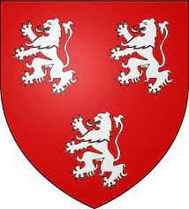

12017688 Earl William I of Ross
Greve av Ross.. Blev ca 54 år.

Far:
Mor:
Född:
omkring 1220 Fearn, Ross & Cromarty, Scotland. [1]
Död:
1274 Fearn, Ross & Cromarty, Scotland. [1]
Barn med ?
Barn:
Personhistoria
1220?
Födelse omkring 1220 Fearn, Ross & Cromarty, Scotland
[1]
1274
Död 1274 Fearn, Ross & Cromarty, Scotland
[1]
Källor